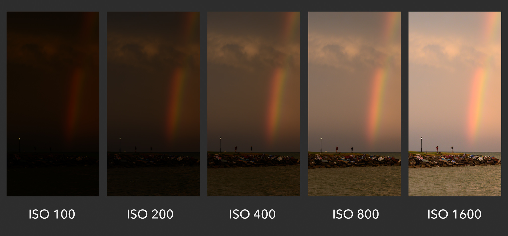
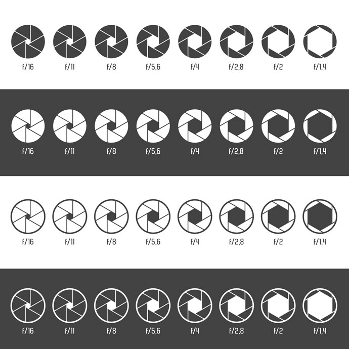
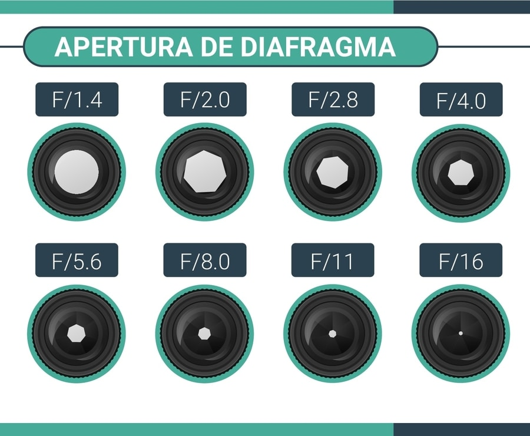
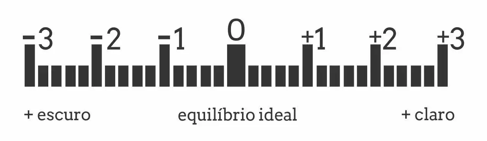
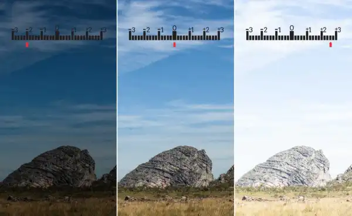
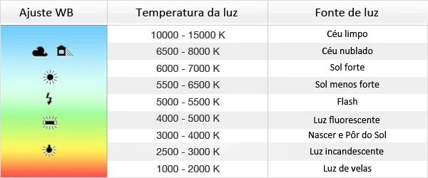
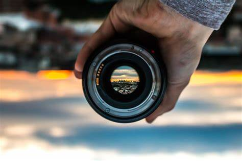
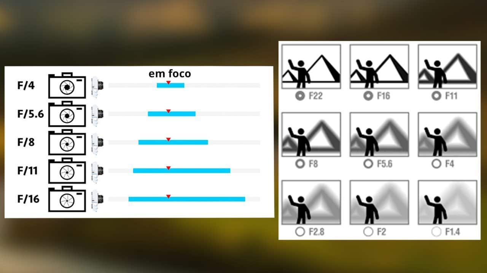

Se você admira a arte e quer embarcar no mundo da fotografia, mas não sabe nem por onde começar, confira nosso guia! Aqui, você vai aprender tudo o que precisa para mandar bem na hora de clicar.
Introdução à fotografia: o que você precisa aprender
Para fazer sua introdução à fotografia, você precisa tomar três passos iniciais: entender as funções da sua câmera, praticar sua disciplina e buscar muitas referências.
A fotografia tem diversos nichos, alguns muito específicos, que precisarão de mais estudo.
Por outro lado, também existem diversas especialidades em que, com muita prática, você pode se aperfeiçoar e conseguir bons resultados.
Não é necessariamente um curso, uma faculdade ou equipamento caríssimo que vai te transformar num bom fotógrafo. E sim, uma união equilibrada de todos esses conceitos, com uma pitada generosa de dedicação.
Como está o mercado da fotografia profissional?
Para que você entenda o que é o mercado profissional da fotografia, é preciso compreender que contratar um fotógrafo é considerado como um artigo de luxo entre outros tipos de consumo.
Existem diversas pessoas que têm uma câmera DSLR acham que podem cobrir eventos ou fazer ensaios. Essas pessoas costumam cobrar barato e o trabalho costuma não ser tão bom.
A verdade é que o mercado está saturado desses falsos profissionais. Para conseguir o seu espaço, independente do nicho que você escolher, é essencial que você seja bom e comprometido com o que faz.
Quanto melhor você for no nicho que escolheu, mais caro você poderá cobrar e mais clientes você terá, já que eles saberão que estão pagando por um trabalho de alta qualidade.
A fotografia sempre tem mercado, mas apenas para os bons fotógrafos.
Os seguintes assuntos serão abordados nesta página:
Na hora do clique, a luz do local passa pela lente e é enviada ao sensor – no caso das analógicas, para o filme. Tudo o que estiver iluminado o suficiente vai aparecer, formando a imagem.
A quantidade de luz que entra na câmera é o que determina se ela terá uma exposição apropriada ou se ficará superexposta ou subexposta. Para definir isso, o fotógrafo precisa levar em conta três variáveis, sempre considerando a iluminação do ambiente: ISO, abertura do diafragma e velocidade do obturador. Todas elas podem ser alteradas em equipamentos que contam com o modo M (manual).
▶ ISO (Organização Internacional de Padronização)
Também chamado como "velocidade do filme", o ISO é o que determina a sensibilidade do filme perante a luz. Nas câmeras analógicas, é preciso escolher o ISO na hora de comprar um filme. Os mais sensíveis e mais indicados para ambientes escuros são os de ISO mais alto, como o ISO 800. Os menos sensíveis e indicados para lugares com muita luz são os de baixo ISO, como o ISO 100.
O mesmo conceito foi levado para a fotografia digital: em uma câmera, você pode determinar o grau de sensibilidade do sensor à luz. Ao escolher um ISO mais alto, porém, a granulação na imagem também aumenta.

Observe o quanto a imagem fica mais brilhante quando o ISO é aumentado de 100 para 1600.
Como configurar?
Os menus variam a cada marca e modelo de câmera. Por isso, no modo manual de seu equipamento, procure pelo ISO nos menus de ajuste. Quanto mais alto o número, mais sensível seu sensor ficará.
▶ Obturador
Sabe o momento em que ouvimos o famoso barulhinho “click” quando tiramos uma foto? Nada mais é do que o obturador da câmera em ação!
O obturador é um dispositivo da câmera que determina por quanto tempo o filme ou o sensor digital será exposto à luz. O obturador só é aberto com o acionamento do botão de disparo, fazendo com que a luz entre no equipamento.
Para entender melhor a relação do obturador com o resultado da imagem, imagine o seguinte: um fotógrafo está parado e se prepara para fotografar um objeto em movimento. O objeto então atravessa o quadro determinado pelo fotógrafo, horizontalmente, até sair de cena.
Se a velocidade de abertura do obturador for baixa e o mecanismo permanecer aberto por mais do que uma fração de segundo, a imagem será captada continuamente, enquanto o objeto passa por frente da câmera. O resultado seria uma imagem borrada.

Cada valor de velocidade do obturador causa um efeito diferente na sua foto.
Como configurar?
O tempo de exposição se mede em frações de segundo. Em uma câmera comum, ele pode variar entre 30s até 1/4000. Algumas câmeras também contam com o modo “B” (bulb), que deixa o obturador aberto pelo tempo em que o botão de disparo estiver pressionado.
O número indicado no display da câmera é sempre a parte de baixo da fração, ou seja: na exposição 1/3000, a câmera deve exibir apenas o número 3000. Ao passar para os segundos, o equipamento passa a usar apóstrofes para indicar o tempo (2’ para dois segundos, por exemplo).
▶ Diafragma
O diafragma é o que define a quantidade de luz que entrará na câmera, indicando a intensidade com a qual o sensor (ou o filme) receberá a luz. Enquanto o obturador determina por quanto tempo o sensor será exposto, o diafragma é o que faz com que o equipamento receba muita ou pouca luz.
Ao contrário do obturador, que abre e fecha a cada disparo, o diafragma fica sempre aberto na posição indicada pelo fotógrafo. O diafragma forma uma dupla inseparável com o obturador: o fotógrafo sempre precisa ajustar ambos os elementos para obter a imagem desejada.
Por exemplo: você pode aumentar a abertura do diafragma para fazer imagens nítidas de um objeto em movimento em um ambiente menos iluminado. O diafragma fica na própria lente e a sua capacidade de abertura varia conforme o modelo escolhido.

Funciona como pupilas humanas: quanto mais abertas estiverem, mais luz passará e vice-versa.
Como configurar?
O diafragma é medido por um valor determinado pela letra “f”. Quanto menor o valor de f, mais aberto estará o seu diafragma. Como já citamos, a capacidade de abertura do diafragma vai depender da lente utilizada. Lentes consideradas “mais claras” podem ter aberturas a partir de f/1.4, por exemplo, enquanto as lentes comuns partem de f/2.8, chegando até ao f/11 ou f/22.
▶ O fotômetro e a exposição ideal
Para quem está começando, o “cálculo” para determinar cada elemento pode parecer um pouco confuso. Por isso, você vai precisar ficar sempre de olho em um dos elementos mais importantes do equipamento: o fotômetro.
O mecanismo ajuda os fotógrafos a perceberem se a imagem terá a exposição adequada, mesmo antes de fazer o clique. O fotômetro interpreta a luz do local conforme as configurações determinadas pelo usuário, indicando o quão próximo da exposição “perfeita” ela ficará.
Sua medição aparece em uma pequena régua, como a da imagem acima. Se a seta estiver no meio, significa que a exposição é a ideal. Se ela estiver pendendo para o lado esquerdo, a fotografia ficará muito escura. Se ela pender para o lado direito, significa que há luz em excesso entrando na câmera, o que poderá deixar a foto muito clara. Nos casos mais extremos, a imagem subexposta ficará completamente preta, enquanto a superexposta ficará totalmente branca.


No exemplo do meio, a fotometria marca o “zero” no meio da régua, consequentemente indicando uma exposição equilibrada entre claros e escuros.
▶ Balanço de branco
A luz que bate nos objetos e é refletida para dentro da câmera pode aparecer em diversas cores. Isso muda conforme a fonte de iluminação usada e a cor dos próprios objetos, que podem refletir tons diferentes. Para que as cores sejam apresentadas da maneira correta, é preciso manter o ajuste sempre da forma adequada para cada situação.
A diferença nos tons é medida por algo chamado temperatura de cor, que é medida em Kelvins. Para entender um pouco melhor, você pode conferir a medição na tabela acima.

Funciona como pupilas humanas: quanto mais abertas estiverem, mais luz passará e vice-versa.
Como configurar?
Existem diversas formas de ajustar isso: algumas câmeras contam com o controle manual e outras trazem o balanço pré-definido e você só precisa escolher opções entre “Sol”, “Luz incandescente”, por exemplo.
Sua câmera também deve contar com o modo automático (AWB). Ele pode ser uma boa opção para quem não quer perder tempo com o ajuste, mas tende a deixar as imagens sem vida. Se for o caso, você também pode fazer as correções necessárias posteriormente, por meio de softwares de edição, porém, isso já é uma missão para os mais experientes.
Nem todas as câmeras contam com o ajuste de balanço de branco manual, mas, se ele existir, procure no manual o caminho do menu para chegar até ele. Com isso, é hora de “bater o branco”.
Escolha uma superfície de cor cinza não muito escura e pouco refletiva (muitos fotógrafos preferem carregar um cartão cinza 18% especificamente para isso) e faça a nova medição. Na falta do cartão cinza, escolha uma superfície branca, porém, essa não é a melhor opção.
▶ Foco
Nem sempre uma foto sai completamente nítida, o que pode indicar que ela tenha ficado fora de foco. O foco pode ser uma arma poderosa para quem quer criar belas imagens. Escolhendo qual objeto vai ganhar destaque, você pode mudar completamente a sua fotografia.

Ele determina o quão nítido o assunto principal estará na imagem.
Como ajustar?
O foco pode ser ajustado de forma manual, girando o anel de foco da lente até que você visualize o assunto completamente nítido na tela. Se preferir, você pode deixar a câmera no modo manual e o próprio equipamento vai interpretar o que precisa ganhar destaque na imagem.
▶ Profundidade de Campo
A profundidade de campo, também conhecida como DOF (“depth of field” em inglês) é o que define o quanto os objetos próximos do foco da imagem também estarão focados. Quanto maior o DOF, mais coisas ao redor do objeto ficarão focados. Com um DOF menor, tudo ao redor do seu objeto principal poderá perder o foco.

Ele determina a intensidade do desfoque entre o objetivo focado e o que está fora de foco, independente se o que está fora de foco é o fundo, ou um plano mais próximo da câmera.
Como controlar?
Existem duas formas de controlar a profundidade de campo: mudando a abertura do diafragma e mudando a sua posição perante o objeto fotografado. Com uma maior abertura (f/1.4, por exemplo) o DOF será menor, o que deixará o fundo da imagem mais desfocado; com uma abertura menor, a profundidade de campo aumenta.
Para lentes mais simples, com menor abertura, você pode aumentar a profundidade de campo ao se aproximar do objeto. Quanto mais perto do objeto fotografado, mais desfocado ficará o fundo, porém, o efeito não é tão impressionante quando com o ajuste feito pelo diafragma.
▶ É hora de praticar!
Depois que você já conhecer bem o funcionamento da sua câmera, o primeiro passo é observar imagens que você considera bonitas e tentar entender como elas foram criadas. Isso ajuda a aumentar o domínio das técnicas e também auxilia na criação de uma linguagem própria.
Em alguns grupos específicos de discussão ou redes como o Flickr, você encontra detalhes sobre as fotografias, como as configurações de ISO, velocidade e abertura utilizadas. Em alguns casos, os relatos do fotógrafo também podem detalhar o trabalho.
Você pode tentar recriar imagens com a sua própria câmera, encontrando a sua própria versão daquilo que gosta. Após algum tempo, você será capaz de trilhar seu próprio caminho usando a criatividade ao somar técnicas e criar seu próprio estilo.